Estudiante de Ingeniería en Sistemas Computacionales
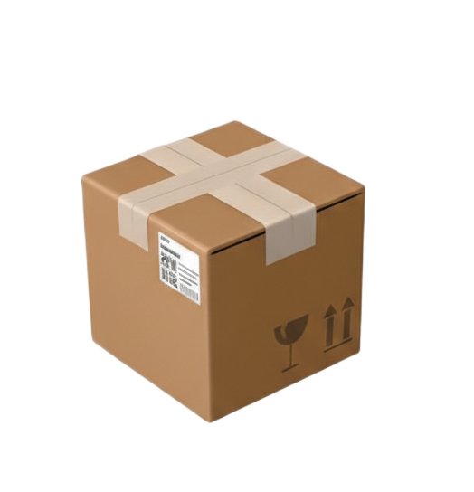
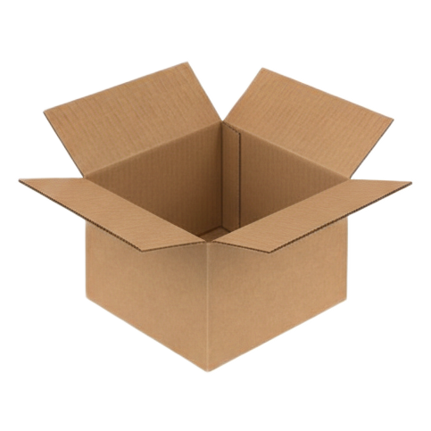
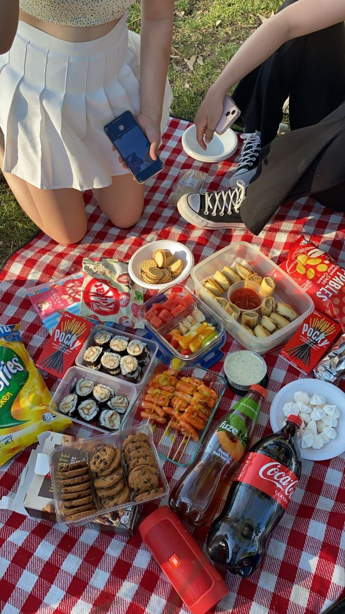
Salir con mi pareja y amigos a dar una vuelta por la ciudad.
Escuchar música y disfrutar de mis playlists favoritas.
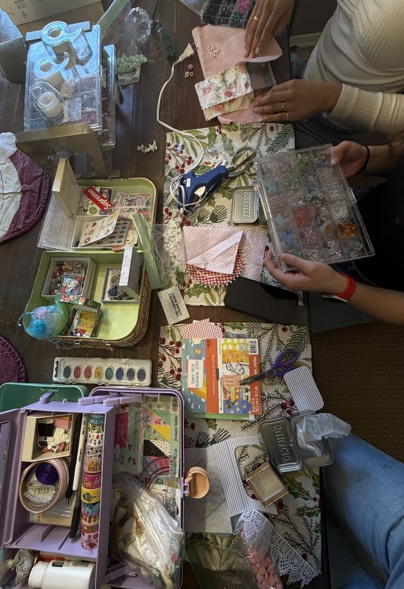
Hacer manualidades por mi cuenta de cosas lindas como pequeñas piñatas
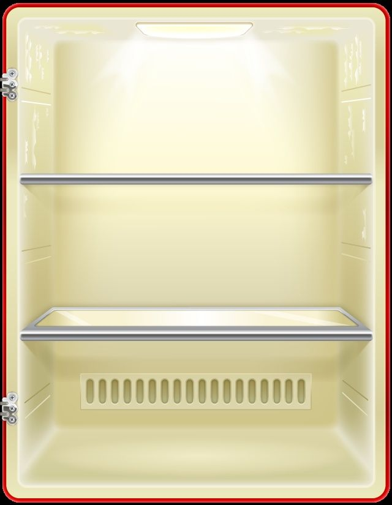
Mis Hobbies - Presentación de Bautista Coello Alexandra
MIS HOBBIES de Bautista Coello Alexandra
En este video explico los conceptos básicos de PGP y su importancia en la comunicación segura.
Ver presentación completa de Bautista Coello Alexandra
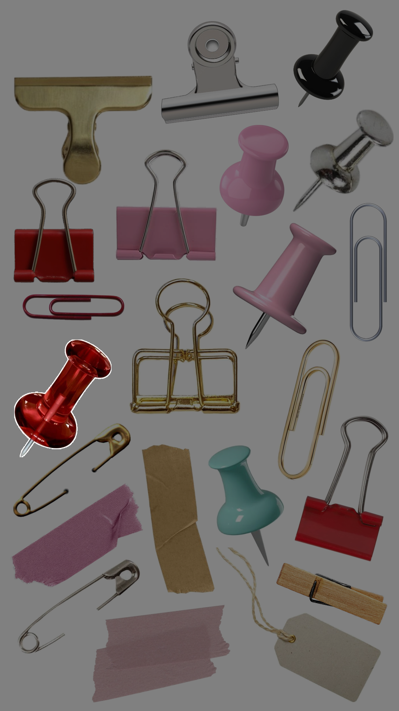
Alan Turing (1912–1954)
Matemático, lógico y criptógrafo británico. Su trabajo no solo definió qué es una "computadora", sino que fue crucial para la victoria aliada en la Segunda Guerra Mundial.
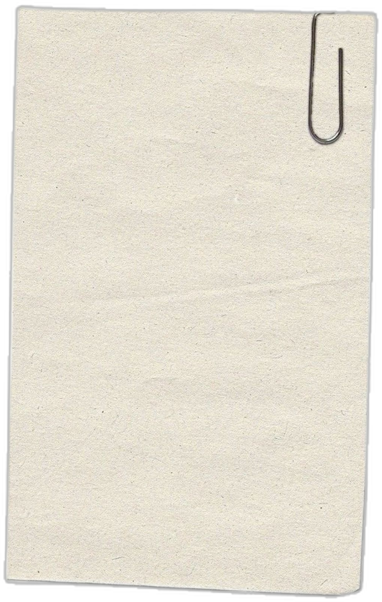
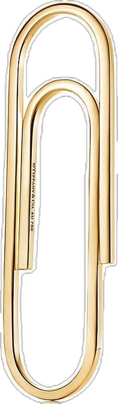
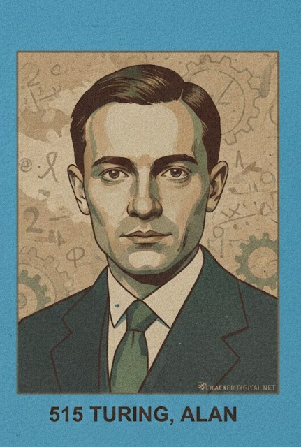
Alan Turing en Bletchley Park
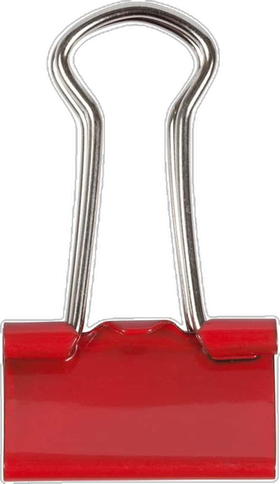
Lideró el equipo en Bletchley Park que logró descifrar los códigos de la máquina Enigma, utilizada por la Alemania nazi para sus comunicaciones militares.
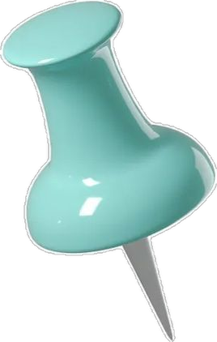
Diseñó una máquina electromecánica capaz de descartar miles de configuraciones de Enigma en pocos segundos, permitiendo leer mensajes enemigos casi en tiempo real.
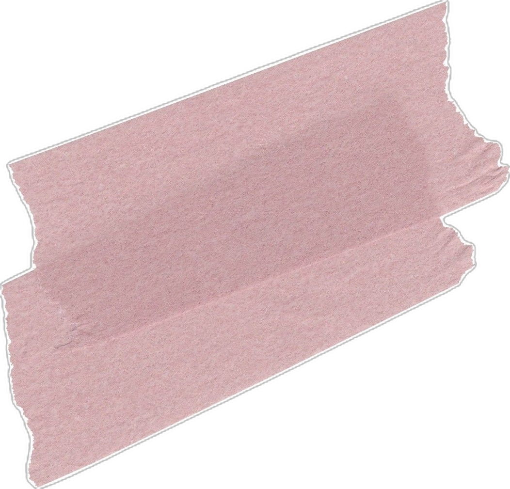
Se estima que su trabajo acortó la guerra al menos dos años y salvó más de 14 millones de vidas.
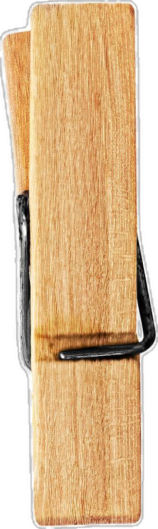
Antes de la guerra, describió la "Máquina de Turing", el concepto teórico que explica cómo funciona cualquier procesador actual.
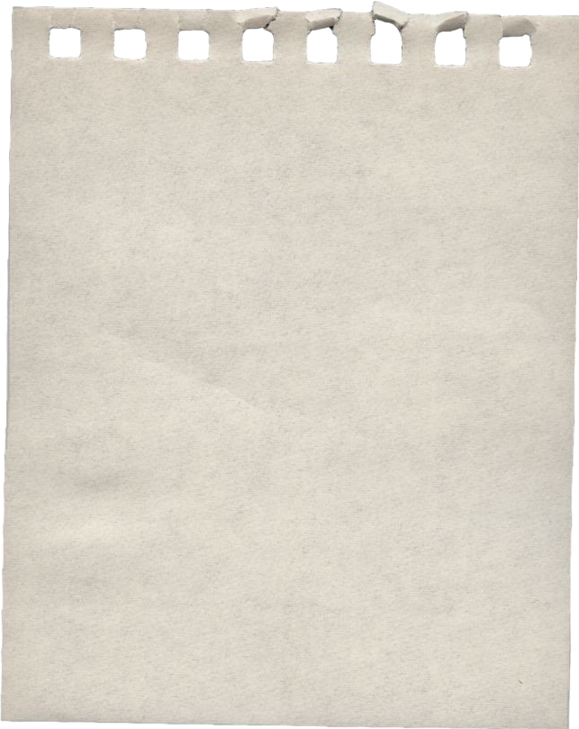
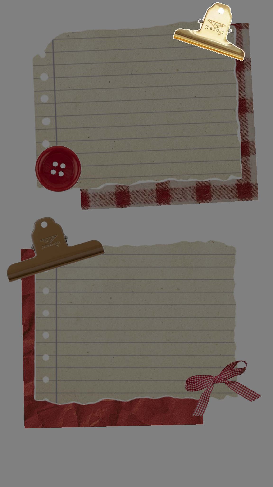
A pesar de ser un héroe de guerra, fue procesado en 1952 por su homosexualidad (entonces ilegal en el Reino Unido). Aceptó la castración química para evitar la cárcel y murió dos años después por envenenamiento con cianuro. En 2013, recibió un indulto póstumo por parte de la Reina Isabel II.
Accede a mis documentos profesionales y credenciales.